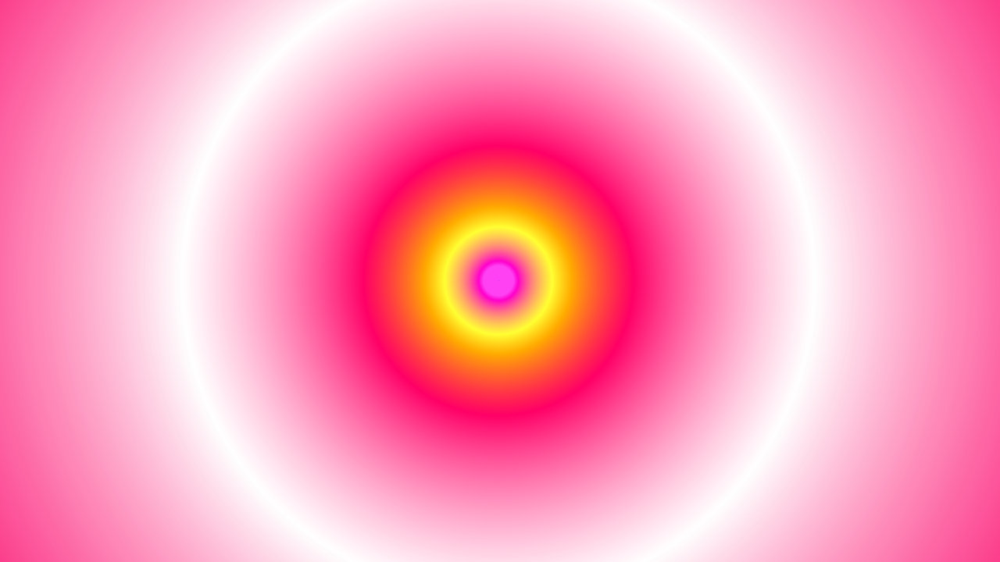

Slow Wave is a generative visual piece that uses the math of musical tuning systems to organize the movement of color and shape.

This project seeks not to visualize sound, but to provide a visual medium for structures that organize sound

The algorithm moves in similiar, but never repeating cycles. Sometimes staying with a color scheme for a while, other times suddenly shifting to a new, unexpected color combination
The project provides a point of visual focus in a chaotic digital landscape.